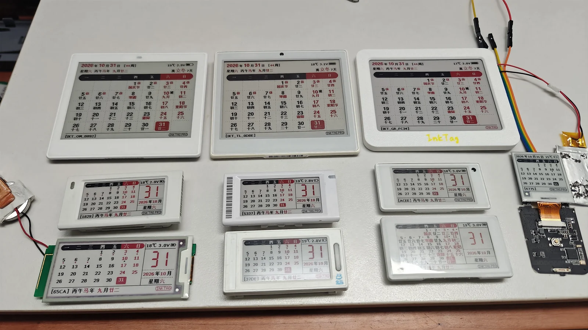

InkTag
中文 | English
InkTag is a cross-platform Bluetooth project for e-paper shelf labels, turning unused tags into desktop calendars, clocks, photo frames and information displays. InkTag provides custom firmware for Bluetooth controllers from Goodix, OnMicro, Telink, Nordic and Dialog. Using Web Bluetooth, you can change pictures, design pages and manage devices directly in a browser, or use the CLI for batch operations, weather stations and scheduled delivery.
Electronic paper reflects ambient light for a paper-like appearance. After an update, the display needs no power to retain a static image, making it suitable for calendars, photos and reminders. With infrequent refreshes and long standby periods, even a coin-cell-powered tag can offer long battery life. Actual runtime depends on battery capacity, refresh frequency, Bluetooth use and the hardware.
Illustrated manual · Project ideas · Open WebUI · Use the local client · Changelog

Some supported devices in use. See supported devices and tested panels for board markings and exact panel configurations.
Quick start
1. Prepare a device and browser
Use a device already running compatible InkTag firmware, with stable power and Bluetooth enabled on your computer or phone. Use Chrome or Edge on desktop. On iPhone/iPad, use Bluefy. On Android, prefer Chrome. Open the site in that browser rather than an embedded WeChat/in-app window, and grant Bluetooth permission.
Stock devices need an appropriate first installation. Read complete flashing and identify the controller and board first. Choose the firmware, board configuration and tools for your exact device, install them, then connect to InkTag. Available files are listed in the Release attachments.
2. Open the WebUI and connect
Open InkTag WebUI or the local standalone HTML page in a compatible browser, click Connect, and select your device in the browser's Bluetooth chooser. Factory names look like IKT_TL_1234; a name ending in _OTA identifies Recovery mode.
The standalone page needs no local server or website deployment. Download or clone the repository and keep the HTML and accompanying resources in webui-standalone/ together. Find location queries still require the local client.
In Settings, check the controller, firmware version and screen configuration. Confirm the actual size, colours and orientation. If Bluetooth is unavailable or the device cannot be found, see connection help or try desktop Chrome/Edge.
3. Send your first picture
Open Images, import a photo, and adjust cropping, orientation and dithering. Check the preview, choose Send to device, select Display once, and confirm.
Wait for both transfer and screen refresh to finish. Flashing during a full refresh is normal; the screen may still be updating after transfer reaches 100%.
4. Try calendars, the canvas and slideshows
- Select the built-in calendar or clock in display settings.
- Open Create to edit a template or blank canvas with text, images and QR codes. You can send a template without first saving it as a page.
- Save pictures to image slots and enable a slideshow. When storage is full, select an existing slot to replace.
You can disconnect after completion. The device retains its picture, and supported built-in calendars, clocks and stored-image slideshows continue according to its settings.
See the illustrated manual and getting started for more detail.
BASIC and PRO features
InkTag BASIC covers most everyday needs (it can usually use the full external image storage, such as the 2 MiB of external flash available for image slots on the ZKC42B). InkTag PRO adds advanced and experimental features. Feature availability depends on the connected device.
[!NOTE] Usage notes
InkTag firmware is free to use. The project provides no purchase links. If you bought a device or related service from a merchant, contact that seller for purchase-related problems.
Obtain PRO firmware through the InkTag QQ group 418446983. See PRO firmware and group access. Most PRO features are experimental.
| Feature | 🆓 BASIC | ✨ PRO |
|---|---|---|
| Images, built-in calendar, clock, device page and QR codes | Yes | Yes |
| Crop, rotate, dither, editable canvas and device preview | Yes | Yes |
| Stored images and slideshow | Uses available storage | Same |
| Screen, orientation, display and LED routing | Where supported | Same |
| Status LEDs and adapted buttons/buzzer | Where supported | Same |
| Bluetooth, diagnostics, OTA and Recovery | Yes | Yes |
| Passive NFC device link | — | With supported hardware |
| Host pages and custom delivery | Edit and preview | Advanced content admission follows device entitlement; scheduled delivery requires an online host |
| Switch pages or image slots with NFC phone commands | — | With supported hardware |
| Advanced screen control | — | Partial refresh on selected screens and E6 six-colour control, with compatible hardware, wiring and drivers |
| User fonts, BLE rename, optional device password | — | Where supported |
| Adjust/hide InkTag branding | — | Yes |
| Anti-loss tracker (Apple Find My network) | — | Experimental; register/control broadcasts online, query locations through a local service |
| NFC image transfer | — | Available with supported NFC hardware and a compatible app. See the PRO guide. |
| Custom dynamic device layouts (planned) | — | Planned PRO feature; not yet available |
DA14585 and nRF52811 offer BASIC only. See image capacity for storage sizes and estimates. Partial-refresh clocks still perform a daily full refresh and use more power than infrequent image updates. Offline E6 conversion is available in BASIC.
See PRO, host pages, and screens. Custom device-executed layouts remain planned. NFC image transfer and delayed shutdown of connectable Bluetooth advertising are available on supported PRO devices.
To build BASIC yourself, see the BASIC build guide.
Low power and battery life
An e-paper panel retains its image between refreshes. Most measured boards draw about 2–3 µA between advertising events and average 30–40 µA with one ordinary Bluetooth advertisement per second. Find My advertising adds an estimated 15–20 µA.
With 200 mAh of usable capacity and one calendar refresh per day, expect about 6.6–8.6 months with ordinary Bluetooth advertising, or 4.4–5.9 months with Find My also enabled. A clock drawing 5–10 mA during a 2–3 second partial refresh every minute would last about 15–43 days with ordinary Bluetooth advertising. See Low power and battery life for the assumptions, measurements and calculations.
Supported controllers
| Manufacturer | Controllers |
|---|---|
| Goodix | GR5331, GR5513, GR5515 |
| OnMicro | OM6626 |
| Telink | TLSR8359 (HS9118) |
| Nordic | nRF52832, nRF52811 |
| Renesas, formerly Dialog | DA14585 |
See supported devices for board markings, product names and limitations, and tested screens for panels, tested use and partial refresh. A supported controller does not make every board using it compatible.
Build from source
This release includes the WebUI, CLI, and BASIC firmware source for the supported controllers.
- Build firmware with the SDK and toolchain for your controller. See the OM6626 SDK and build steps or the nRF52811 build and packaging steps.
- Build WebUI with Node.js to preview changes or produce static and standalone builds.
- Install and develop the CLI in a Python environment.
Choose how to use InkTag
Online WebUI
The image page supports crop, canvas rotation, dithering, preview, display-only and stored-slot delivery. The canvas offers text, images, QR codes, weather and date-card templates. Settings expose only capabilities supported by the connected firmware.
Find is experimental anti-loss based on nearby participants in Apple's Find My network, not real-time GPS. Small labels can be carried with personal belongings. Register online, save an encrypted transfer backup and import it into a local client for location queries. You can also export all tags encrypted when moving computers; see Find queries and migration.
Use the online site without installation, or the local service for persistent data and Find. Runtime packages do not require Node.js. See WebUI and online versus local.
CLI for batch operations and automation
Install Python 3.11 or newer, download/clone this repository or extract the complete CLI ZIP, and enter the root containing both cli/ and webui/. Use the unified installer:
Windows:
powershell -NoProfile -ExecutionPolicy Bypass -File .\install_inktag.ps1
macOS / Linux:
sh install_inktag.sh
This installs the CLI into cli/.venv and automatically installs the local Find query service dependencies in a separate find/runtime/.venv under the per-user data directory. It then starts local WebUI and Find in the background (webui start); closing the terminal does not stop them. Setup prints copyable start, stop, status and log commands. New macOS installations store data and logs in ~/.inktag/; an existing legacy directory is retained to preserve sessions and tags. System Python is unchanged; installation does not log into Apple, connect devices or clear existing data.
The installer uses the included webui/dist/static/ build and requires no Node.js. To update a modified WebUI, follow the WebUI build guide and rerun the installer.
First setup requires internet access. macOS uses native system authentication and does not need 7-Zip or the Apple image below. Location queries on Linux are not yet qualified.
Windows prerequisites:
Install the full version of 7-Zip first (usually x64, using the default installation folder), then run the installation command above. First-time Find setup downloads and extracts about 292 MB of authentication components, so internet access is required.
Approve the administrator prompt when installing 7-Zip. If InkTag setup reports Access denied or WinError 5, use an administrator account with access to the indicated data folder and rerun PowerShell as administrator. Do not delete existing data.
Normal InkTag use with your own writable data folder does not require administrator privileges.
To install without starting, run powershell -NoProfile -ExecutionPolicy Bypass -File .\install_inktag.ps1 --prepare-only on Windows or sh install_inktag.sh --prepare-only on macOS/Linux. After installation, choose either method below; command arguments are the same.
Method 1: run the client script without activation
Run from the repository or complete CLI package root. The script uses Python in cli/.venv; no global PATH entry is required.
Windows PowerShell:
powershell -NoProfile -ExecutionPolicy Bypass -File .\cli\inktag.ps1 device scan
macOS/Linux:
bash cli/inktag.sh device scan
Replace device scan with another command, such as device -n B892 info, or use --help. If cli/.venv does not exist yet, run the installer first. These client scripts do not install Python itself.
Method 2: activate the Python environment and use inktag-cli
Prepare cli/.venv using the unified installer above, then activate it in your current terminal:
Windows PowerShell:
. .\cli\.venv\Scripts\Activate.ps1
inktag-cli device scan
macOS/Linux:
source cli/.venv/bin/activate
inktag-cli device scan
Activate again in each new terminal; run deactivate to leave. If policy blocks the activation script, use Method 1 instead of changing system execution policy.
For a manually installed CLI-only environment, first install Python3.11+ and follow the CLI guide to create a virtual environment and install cli/. Use the unified installer when you need Find queries so its dependencies are prepared as well. Rerun the installer after updates.
The examples below use inktag-cli after activation. For Method 1, replace that prefix with the client script invocation:
inktag-cli device --ble-name IKT_TL_1234 info
inktag-cli display --ble-name IKT_TL_1234 calendar
inktag-cli image --ble-name IKT_TL_1234 upload photo.jpg --slot next --name photo
inktag-cli device --ble-name IKT_TL_1234 slot list
inktag-cli device --ble-name IKT_TL_1234 display slideshow start --interval 5m
inktag-cli device --ble-name IKT_TL_1234 display slideshow stop
Replace the name and path with your device and image. Disconnect the same device from WebUI before using the CLI. See CLI usage for commands, credential caching and troubleshooting.
Local service: enable Find device track recording
The repository and complete CLI ZIP include local WebUI and the Find query service; no separate server package is needed. Use the unified installer initially, then start with the same client commands:
Windows:
powershell -NoProfile -ExecutionPolicy Bypass -File .\cli\inktag.ps1 webui start --repo . --enable-tls
macOS/Linux:
bash cli/inktag.sh webui start --repo . --enable-tls
With an activated Python environment, use:
inktag-cli webui start --repo . --enable-tls
Open Find in the local WebUI, log in to your query account, register a tag or import its existing information, then choose “Start recording”. Keep the local service and network available so it can query periodically and save received location reports. A new location is not guaranteed for every query. See WebUI usage for installation/LAN access and Find queries and migration.
Complete flashing and OTA
The firmware bundle and release/firmware/ in this repository include OTA and Full firmware, flashing BAT files, and board presets for supported targets.
Stock devices and wired recovery require an exact-controller, exact-board complete-flashing package. This clears MCU-side settings/data; heed the tool's scope warning, preserve identity/calibration and keep stock backups. Some boards retain a separate external image Flash as explicitly stated by the tool.
Prefer OTA for an existing InkTag installation. Connect in Settings → Firmware to see available firmware packages or select a local signed application. Wait for application attestation and reconnection; 100% transfer is not completion. After a failure, reconnect to confirm the current role/result, then select a matching package to retry if needed; never blindly replay an uncertain write.
Download firmware, programmer tools and clients from the actual Release attachments. Unlisted files are not available; never substitute a similar name or screen size. See complete flashing, OTA/Recovery and client updates.
Help and privacy
E-paper has limited native colours and flashes during full updates. Low temperatures may slow refresh. For connection/display/login issues, see FAQ. Do not share passwords, activation codes, Find keys, sessions or location history; read security/privacy.
Feedback and contributions
InkTag supports many combinations of controllers, boards, and displays. The current tests cover only part of that range. Hardware test results, flashing tutorials, and documentation improvements are welcome.
Please include the controller, PCB model, firmware and client versions, steps to reproduce, and the error you saw. Redact any logs you share. Open an issue
Pull requests are welcome for fixes, tutorials, and better-looking, readable templates for different e-paper sizes. Open a pull request
Acknowledgements
We thank the authors and contributors of the following projects.
- EPD-nRF5 — InkTag drew heavily on this project in its early development, particularly for e-paper drivers and calendar features.
- ATC_TLSR_Paper — Hardware documentation and an open implementation for Hanshow TLSR8359 labels.
- epdoptimize — Color quantization and dithering for e-paper images.
- U8g2 for Adafruit GFX and the WenQuanYi font project — Glyph rendering and Chinese font resources.
- FindMy.py and os-findmy-e — Find queries and local authentication support.
We also thank Leafer, React, Lucide, the controller tooling ecosystem, and everyone who contributed hardware, testing, or feedback. Third-party notices
The creation editor uses Fusion Pixel, Z Labs Pixel CN, Muzai Pixel, Chill Bitmap, and WenQuanYi Bitmap Song. Thanks to their authors and contributors.
License
InkTag-owned BASIC firmware, WebUI, and CLI source use GNU AGPL v3. PRO firmware and third-party works retain their accompanying terms. See third-party notices for creation font licenses and sources.
User documentation © InkTag contributors, licensed under AGPL-3.0-only.